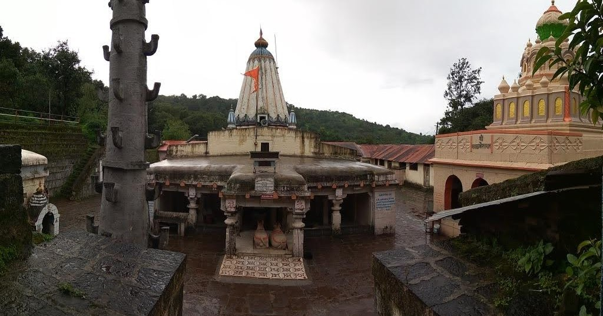
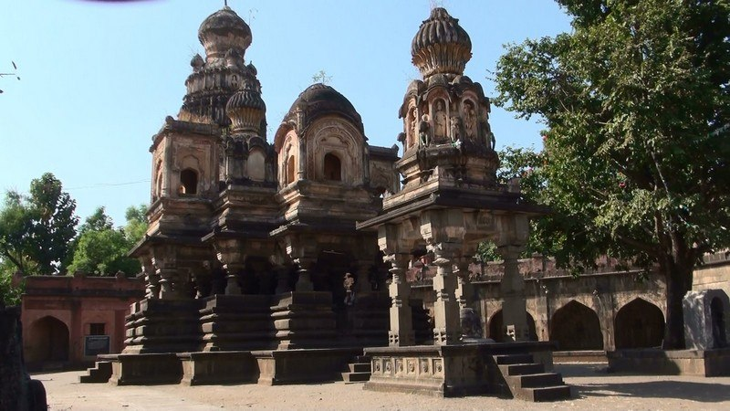
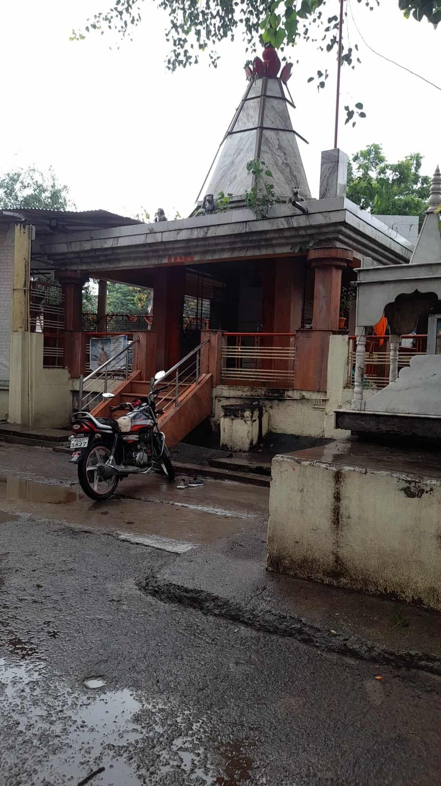
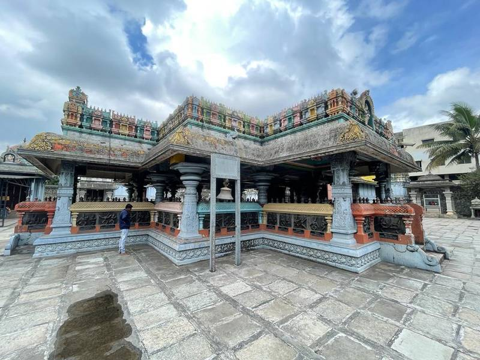

Yateshwar temple is an ancient shiva temple located on a hill top,surrounded by dense greenery
it is believed that sages(yati)performed meditation here,which is how the temple got its name.
The location offers both spiritual peace and scenic view.
Why visit:
hilltop temple with panoramic views
calm and meditative atmosohere
ancient religious importance
Best time to visit:Early morning
Monsoon & winter(pleasant climate)

Pateshwar temple is one of the oldest and most sacred Shiva temples in satara district
The temple complex is famous for hundreds of ancient Shivlings carved in stone,spread
across a forested area.The temple is believed to be connected with the Pandava period,
giving it strong mythological importance.
Why visit:ancient Shivlings
Spiritual forest surroundings
peaceful and powerful religious site
Best time to visit:Shravan month,Mahashivatri,Winter season
Sangam mahuli is a sacred place where rivers meet(sangam),making it highly religious.The
temple located here is dedicated to Lord Shiva,and the sangam is considered holy for rituals
and prayers.the place has been spiritually important since ancient times and attracts many devotees.
Why visit:Holy river confluence
Spiritual rituals and prayers
Calm natural surrounding
Best time to visit:Early morning
Mahashivatri and Shravan

Famous for its unique five-faced Hanuman idol.Devotees believe this temple fulfills wishes
and provide strength and protection.This unique form of Hanuman represents strength,protection,
devotion,and courage.The atmosohere of the temple is calm and devotional,making it an ideal place
for prayer and Spiritual peace.
Location:Satara city, maharashtra
Easily accessible by road
well connected with local transport
Best time to visit:Early morning or evening for peaceful darshan
Tuesday and saturday(special days for hanuman workship)

The nataraj Temple is an ancient and culturally important temple dedicated to lord shiva
in his cosmic dancer(Nataraj)form.The temple reflects traditional stone architecture and has
a calm spiritual atmosohere.it is closely connected with local religious traditions and festivals.
Why visit:Unique Nataraj form of lord shiva
peaceful environment
cultural and spiritual significance
Best time to visit:Morning Hours
Mahashivatri festival

it is an ancient and highly respected temple located in Wai town,The temple is dedicated
to Lord Ganesha,who is worshipped as the remover of obstacles and the god of wisdom and new
beginnings.Wai is known as Dakshin Kashi because of its many historic temples along the Krishna
River,and the ganapati temple holds an important place in the religious life of the town.
Location:Wai town,satara district
Near the Krishna River ghats
Why visit:peaceful and devotional atmosohere
important religious stop in wai pilgrimage tour
Opportunity to experience Wai's temple culture and riverfront heritage